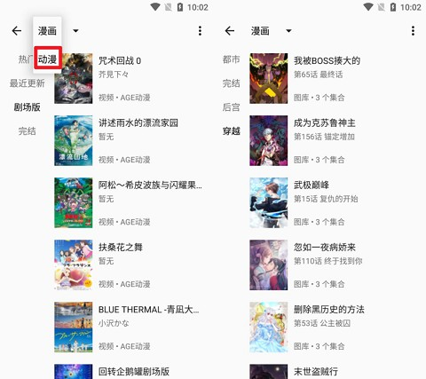

用 myacg 搭一条内容消费流水线：从发现到归档全在一个 App
每周追新番、补漫画、扫网文更新以前要三个 App 来回跳，现在 myacg 统一入口把发现、阅读、缓存、清理串成一条链，实测一个月省了不少碎片时间。
旧流程：三个 App 来回切的日子
我每周固定要做一件事：整理本周新内容。番剧追更、漫画补坑、网文扫更新——这三件事以前分散在三个不同的 App 里。
打开 A 站客户端看看关注的番更了没，切到 B 漫画 App 翻一下追了二十话的那部有没有新章节，再摸出手机上装的 C 阅读器刷一眼书单里的网文。三个 App 各自有收藏、各自有缓存、各自的推送提醒，整理的时候像在给三个不同的人发周报。
更麻烦的是缓存。三个 App 的下载目录散在手机内部存储的不同子文件夹，每个月底手机红条报警的时候，我要挨个进设置里清缓存——先在 A 站清掉看完的番剧缓存，再切到 B 漫画 App 删旧章节，最后去 C 阅读器点"一键清理"。一套下来，少说也要三五分钟。
朋友推荐了 myacg 的时候我没太在意，又一个聚合类应用而已，能比三个专用 App 强到哪去。
新流程：把 myacg 插进每周整理的环里
抱着试试看的心态从官方下载拿了安装包装了之后，才发现它真正解决的是入口分散的问题——它的官网上把漫画、小说、动漫、图片、音乐、网盘、轻小说七个品类全部接进来了，在一个界面里用左上角那个分类切换按钮就能精准过滤。我不需要的图片和音乐源直接在搜索源管理页禁用，禁用之后主界面搜索和网络发现里就不会再出现那些品类的结果，界面立刻干净了一大截。
这套工作流我现在固定这么走：
第一步：快速发现。打开主界面，网络发现默认聚合所有品类，但因为我已经禁用了图片、音乐、网盘、轻小说四个分组的源，实际出来的就是漫画、小说、动漫三类的更新流。相当于把以前三个 App 的"关注更新"页面揉成了一个，扫一遍就知道本周有什么值得追。如果想搜特定标题，切到网络搜索，左上角选好品类再输关键词——在全部品类里搜容易被无关结果干扰，限定到漫画或小说之后结果干净很多。

第二步：离线缓存。看中的内容直接点下载。myacg 的缓存是统一管理的——不管是漫画图片还是动漫视频还是小说章节，下载完之后都在同一个本地缓存管理页面里。我不用再记得"这个番是在 A 站下的"这种事。
第三步：场景化阅读。阅读界面的字体和背景色我调了三个预设：通勤地铁上光线混杂用米黄底 + 适中字号 + 中等亮度，晚上躺床上看切黑底白字 + 调暗亮度，白天靠窗用淡绿底 + 字号稍大。字体大小也按屏幕尺寸调到 20sp，这个数字是myacg文档里给的参考值，我自己读了一周确实不费眼。
第四步：自动清理。这是我最喜欢的环节——智能清理功能。设置里把缓存清理周期设成 45 天，手机存储空间低于 20% 的时候触发。它只删已下载的缓存文件，书架收藏、书签、阅读进度这些都不会动。清完之后下次打开那个作品重新联网加载就行，但我的收藏和进度都还在，相当于一个自动维护的"临时仓库"。
实操里最容易断链的两个环节
这套流程跑了三周，发现两个最容易出问题的地方，提前说出来省得踩坑。
第一个环节：分类切换后的搜索结果质量。默认七个品类全开的时候，搜一个"进击"，结果里可能混出图片源的壁纸、音乐源的 OP 单曲，干扰非常多。解决办法就是在搜索源管理页把你不用的品类源全部禁用——不是关闭 App 的分类切换，而是直接在源管理里删光那个分组下的所有源。这样主界面搜索框和网络发现都不会再去抓那些品类，结果立刻干净。
第二个环节：智能清理的周期设置。默认 30 天其实偏短——我追的几部番剧每季连载 12 话，每周更一话，追完大概要两个月。30 天清理一次的话，追到一半缓存可能就被清了。改成 45 天之后刚好能覆盖一季番的周期，缓冲期也留足了。另外要注意，智能清理不是所有版本都有，找不到这个开关的话只能手动进缓存管理页按占用空间排序，优先删体积最大的大户。
效果和边界
量化一下：以前每周整理内容要开三个 App，每个 App 搜一遍、下一遍、清一遍，现在一条链下来只在 myacg 里完成。保守估计，每周少了六次 App 切换，少了两次手动清理缓存的操作，少了至少五分钟的碎片时间。
手机存储空间也友好了——三个旧 App 加起来占了将近 200MB 的安装空间和各自的缓存目录，现在换成一个 myacg，安装包本身不大，缓存统一管理，智能清理帮我自动维护，月底不用再手动挨个清。
但这套流程也有边界。网盘搜索功能只是帮你找到分享链接，不支持直接下载——蓝奏云的积分、百度网盘的限速该怎么下还是怎么下，myacg 只是搜索入口。分享链接有有效期，过期或被删除就打不开了，搜不到的时候换个关键词或换个源站试试。另外，智能清理、七个品类的搜索源配置这些功能在不同版本之间有差异，如果某个功能找不到，说明当前版本可能不支持，下载较新版本的 APK 试试。
总的来说，这套工作流的核心收益是把碎片集中成了一条通路。不再需要在三个 App 之间来回跳，不再需要记哪个内容在哪个平台下的，缓存自动维护，阅读场景预设好——打开 App，扫一遍更新，下载，按场景阅读，关掉。一条链走到底，没有中间的中断和等待。
资料同步
这套 myacg 的搜索源配置和使用笔记，我分别放在了 GitHub、Gitee 和 GitCode 三个仓库里，方便不同偏好的人获取和备份。Gitee 在国内访问更稳定，GitCode 适合企业环境，GitHub 则是最通用的公开分发渠道——内容完全一致，挑哪个顺手就用哪个。